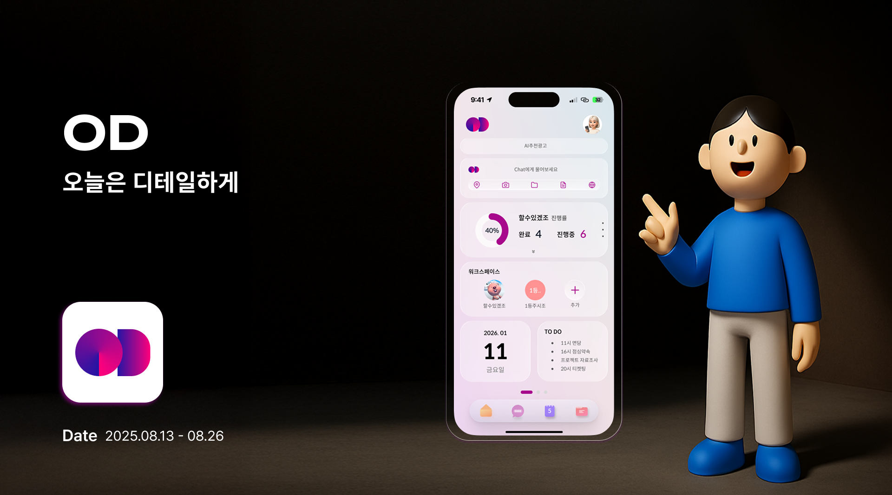

SOEUN_PORTFOLIO
Project 01

VIEW PROJECT
Web Development
일정을 능동적으로 ‘설계’ 해주는
새로운 형태의 일정 관리 앱
OD
일정 공유 앱 사용자들이 기록 할 필요없이 자동으로 일정 정리가 된다면,
누구나 간편하게 사용 가능한 앱으로 만들어 질 것이다.
Book Flip 페이지 전환 효과
CSS 3D Transform 애니메이션
반응형 레이아웃 구현
HTML
CSS
JavaScript
prototype
PPT
04